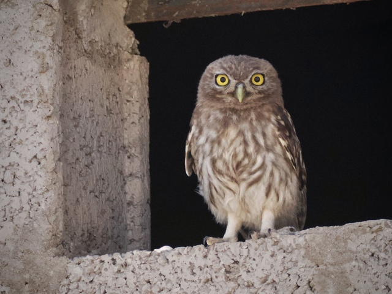
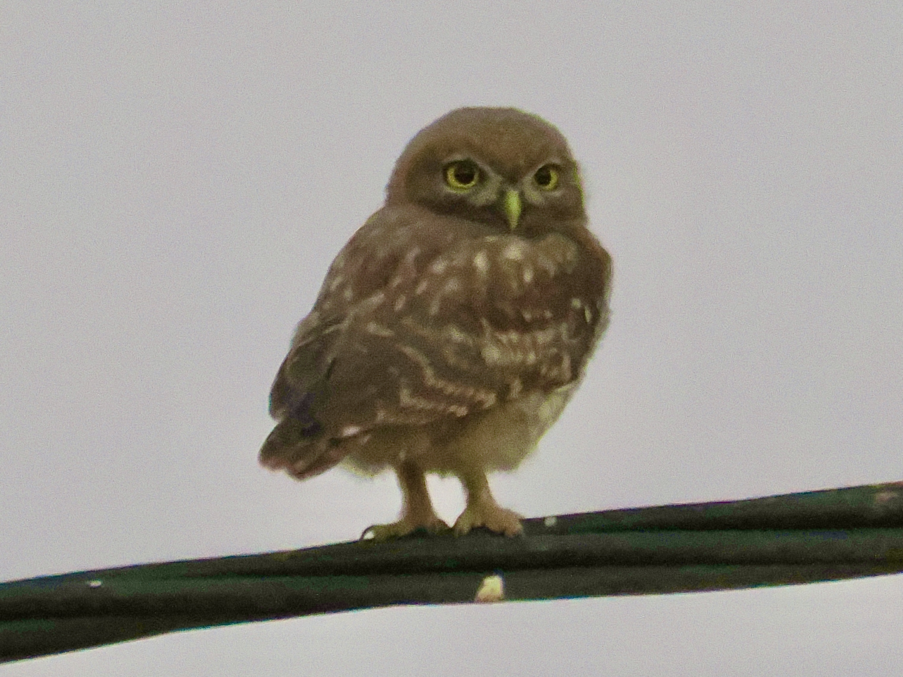
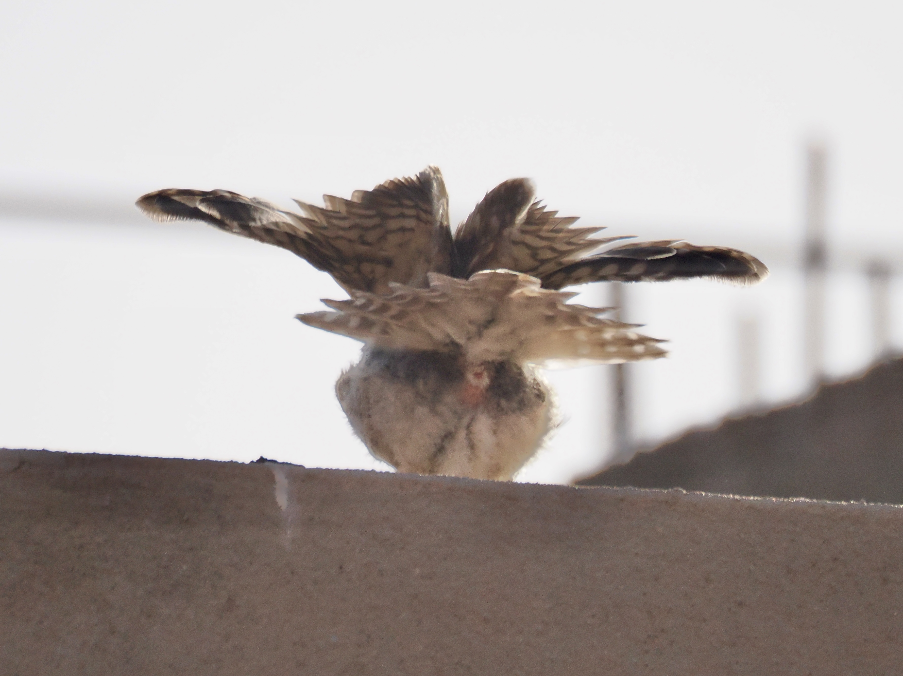

Little Owl
Athene noctua
Order: Strigiformes
Family: Strigidae

A very small brown owl. Has a flat head and staring yellow eyes. Belly is pale with brown vertical streaks. Unlike other owls, it is also active during the day.

Gives this adorable wide-eyed look when light levels are low. In the UK, it is an introduced species.

Just in case you have never seen an owl's cloaca?????